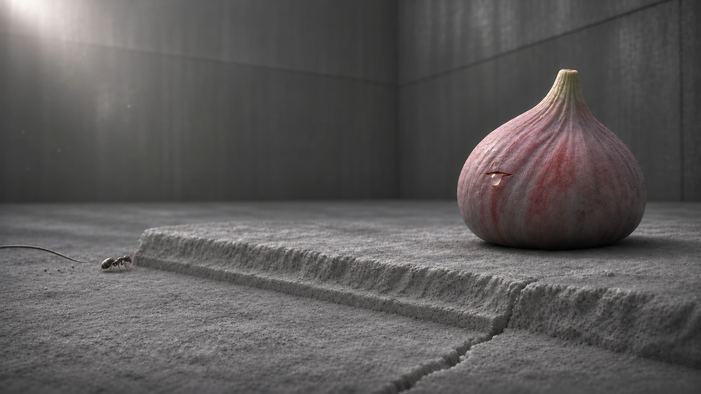
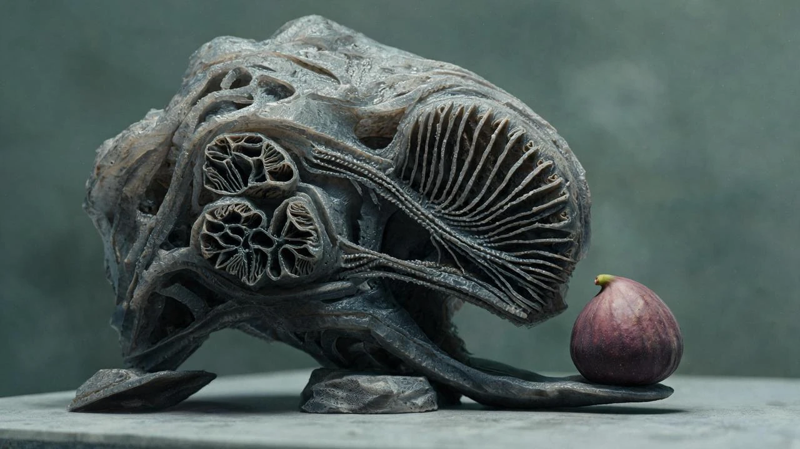
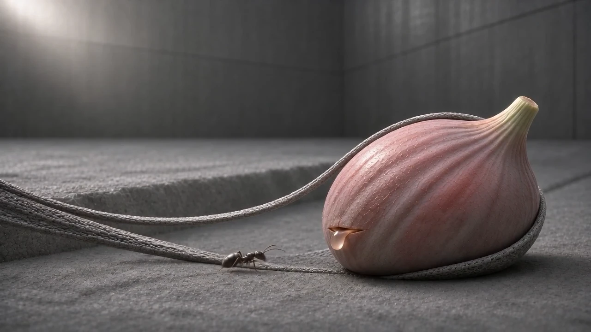
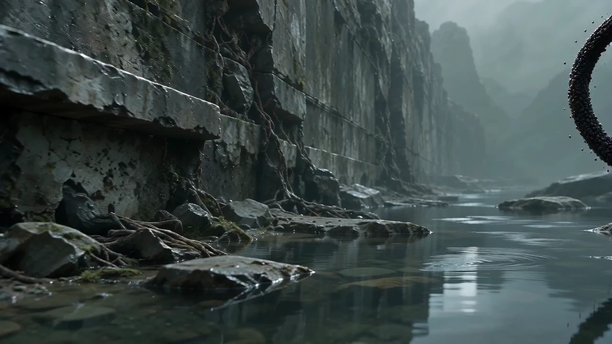
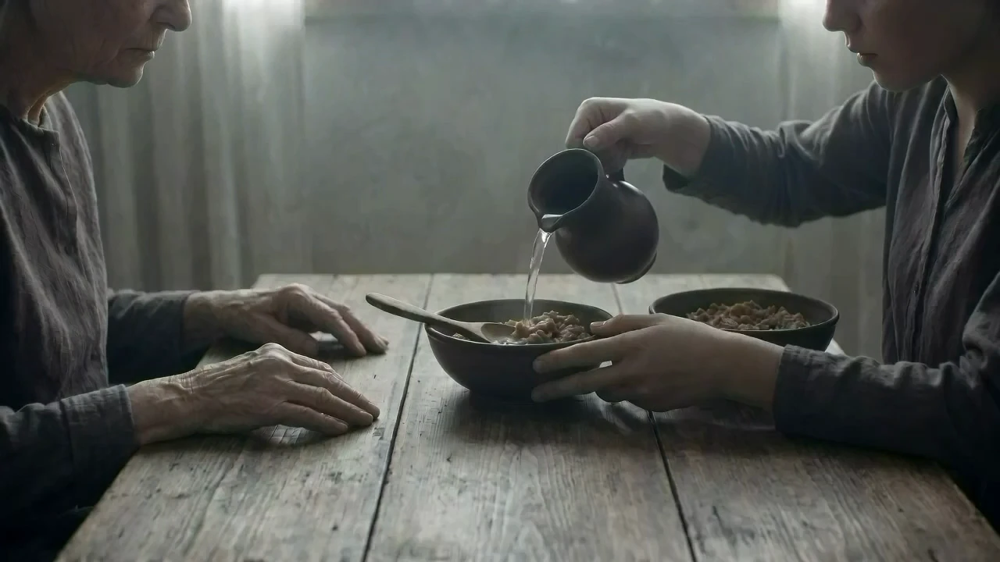
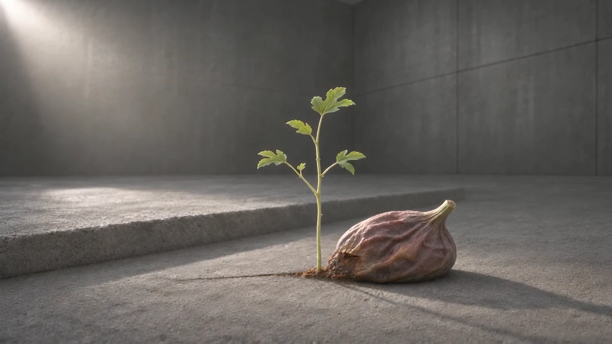

Overview
We Once Ate the Sun
In 6104, an archivist with no need to eat studies why humans consumed other life, cooked it, and offered food to one another. Explanations of matter and energy gradually give way to taste, sharing, and care.
Humans sustain life by consuming the world.
They build relationships by sharing it.
The Challenge
How can separate shots belong to the same world?
Generating shots individually makes identity, scale, physical support, spatial continuity, and sound a continuing production task. Matching walls, materials, and light does not guarantee that an ant remains in the same place.
Use a crack in the stone to check spatial continuity.


This comparison documents a keyframe revision. Intent and motion continuity still require video review.
Creative Decisions
Make an unfamiliar body capable of giving.
The body needs to make sensing, contact, and support legible. Early studies compared a flexible membrane with mineral layers. Later mineral-grain tendrils explored a body that could both examine a fig and offer it to another life.



These are character studies from different stages, rather than frames from the film. Later shots further refine material, space, and scale.
Production Workflow
Five stages from story to delivery.
Storyboards establish the action order. References, keyframes, and videos are organized by shot in TapNow. Reviewed keyframes guide generation, followed by motion and sound checks; useful takes enter the edit while rejected versions remain traceable.

Define the endpoints. Review what happens between them.



Deliverables
Keep the process, not just the finished film.
Existing outputs include a complete film version of approximately 3:42, a 60-second teaser, and eight still photographs. The selection below moves from future ruins to human life and back to the archivist’s actions.






Stills retain their original proportions and color. Source-shot and full-film timecodes are labeled separately. Select any image to enlarge it.
Reflection & Scope
Decide what models can do, and what needs shot-by-shot attention.
The central judgment is whether an action tells the story: support before release, notice difficulty before offering help, and let each shot carry forward the result of the previous one. I locate problems in specific shots, then revise through keyframes, action breakdowns, and local regeneration.